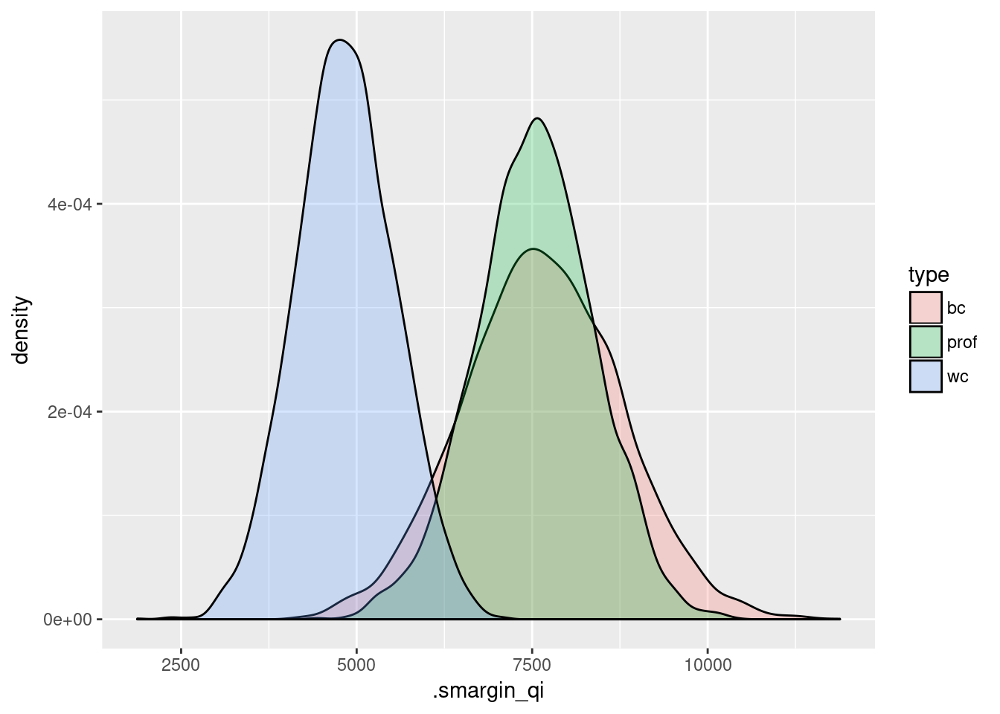
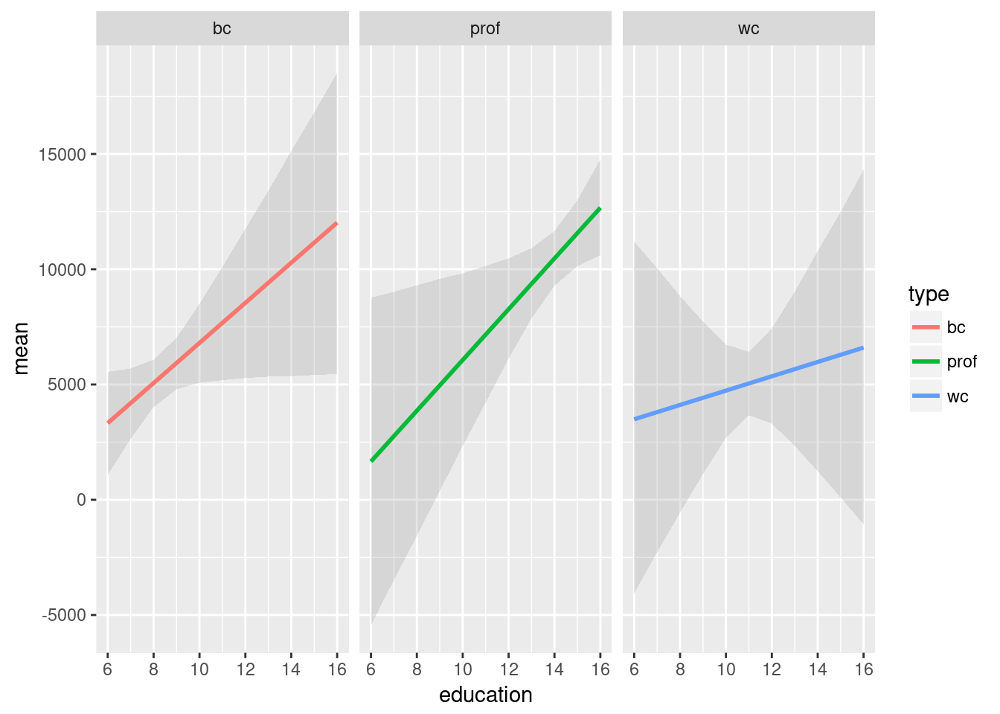

smargins Quickstart Guide
2017-11-14
Workflow overview
Models in R can generally be fit using a formula interface. The fitted models can then be explored and post-processed in various was, for example to display an ANOVA-style table, calculate confidence intervals, or plot predictions from the model. This package provides additional post-estimation functions to calculate average marginal effects along with simulation-based estimates of uncertainty.
Examples
Let’s walk through an example. This example uses the Prestige dataset. It contains data on 102 occupations. We will model the effect of education and type on income.
Building Models
Since income is a continuous variable, least squares is an appropriate model choice. To estimate our model, we call the lm function:
# load data
options(StringsAsFactors = FALSE)
data(Prestige, package = "car")
Prestige <- na.omit(Prestige)
# estimate ls model
m1 <- lm(income ~ education + type, data = Prestige)
# model summary
summary(m1)##
## Call:
## lm(formula = income ~ education + type, data = Prestige)
##
## Residuals:
## Min 1Q Median 3Q Max
## -6242.7 -1768.0 -408.3 1149.1 16939.3
##
## Coefficients:
## Estimate Std. Error t value Pr(>|t|)
## (Intercept) -2048.2 2431.5 -0.842 0.40171
## education 887.9 284.7 3.119 0.00241 **
## typeprof 102.1 1805.3 0.057 0.95501
## typewc -2685.8 1140.5 -2.355 0.02061 *
## ---
## Signif. codes: 0 '***' 0.001 '**' 0.01 '*' 0.05 '.' 0.1 ' ' 1
##
## Residual standard error: 3312 on 94 degrees of freedom
## Multiple R-squared: 0.4052, Adjusted R-squared: 0.3862
## F-statistic: 21.35 on 3 and 94 DF, p-value: 1.249e-10Since this is an ordinary least squares regression, the coefficients are themselves quantities of interest. The education coefficient tells us that (holding occupation type constant) every additional year of education is associated with an $887.9 increase in income. The coefficients for typeprof and typewc are slightly more difficult to interpret. They are dummy codes that tell us the expected difference between blue-collar and professional incomes, and between blue-collar and white-collar incomes.
Although the model coefficients are not difficult to interpret, the average marginal effects are even more straight-forward. We can calculate theme using the smargins function.
library(smargins)
ppred1## type .sim_number .smargin_qi
## 1 prof 1 6403.065
## 2 prof 2 8480.511
## 3 prof 3 7493.514
## 4 prof 4 5115.365
## 5 prof 5 6222.472
## 6 prof 6 8259.206
## # - - - - - - - - - - - - - - - -
## 2995 wc 995 6626.907
## 2996 wc 996 4264.392
## 2997 wc 997 5733.285
## 2998 wc 998 4746.942
## 2999 wc 999 4768.615
## 3000 wc 1000 5213.085The print method shows us how the result is organized. There is a summary method that gives a default set of statistics for each combination of values specified in the at argument:
summary(ppred1)## type mean sd median lower_2.5 upper_97.5
## 1 prof 7641.524 1132.4734 7618.644 5441.452 9843.880
## 2 bc 7528.110 860.2856 7538.573 5758.365 9164.554
## 3 wc 4876.804 675.1763 4856.793 3604.888 6281.376Comparisons
The summary method shows expected values for each value specified in the at argument, but frequently we want some transformation of these values. There is a scompare function that gives pairwise differences:
## type mean sd median lower_2.5 upper_97.5
## 1 prof vs bc 2764.7197 1241.605 2795.4306 301.2291 5080.718
## 2 prof vs wc -113.4141 1833.291 -121.9363 -3747.7612 3594.661
## 3 bc vs wc 2651.3056 1136.463 2672.7300 222.8833 4838.018but the really great thing is that the structure is simple enough that the user can perform their own arbitrary transformations. For example, we can compare the average of white collar and professional with blue collar:
bc <- subset(ppred1, type == "bc")$.smargin_qi
wc_prof <- subset(ppred1, type == "wc")$.smargin_qi +
subset(ppred1, type == "wc")$.smargin_qi
## mean sd median lower_2.5 upper_97.5
## -2112.0848 1647.5605 -2076.3729 -5413.5168 964.9362Visualizations
Another advantage of the simple data structure returned by smargins is that it makes creating plots using standard graphics packages in R easy. For example, we can graph the expected values by type:
library(ggplot2)
ggplot(summary(ppred1),
height = 0.25)
ggplot(ppred1,

This is especially useful for plotting interactions:
m2 <- lm(income ~ education*type, data = Prestige)
ggplot(summary(m2.sm),
stat = "identity",
## Warning: Ignoring unknown aesthetics: ymin, ymax